Updated supplied study solution — English only. આ નવો આપેલો ઉકેલ માત્ર અંગ્રેજીમાં છે; ભાષા બદલવાથી જવાબોનું ભાષાંતર થતું નથી. Unofficial model answers, not a GTU marking scheme; answers have not been independently verified.
Exam choice: Q1(a) and Q1(b) are common parts, shown once. The supplied HTML repeats their identical answers in both Q1(c) choice branches; both source occurrences are recorded in the audit. Choose one Q1(c) option as printed on the original paper.
Manufacturing Engineering-I
All printed question parts and every OR alternative are answered in English. These are explanatory study solutions aligned with the supplied paper and Semester III course notes—not an official GTU marking scheme.
The paper states that the English version is authentic; wording below follows it.
Question 1
Question wording, marks and expandable study solution
Q1(a)State the types of core. Describe any one with a neat sketch.3 marks
Model answer · 3 marks
By position/support: horizontal, vertical, balanced, hanging/suspended, cover and drop cores. These describe how the core is located in the mould; dry-sand, shell and chemically bonded describe core-making material/process, a different classification basis.
Horizontal core: it lies horizontally in the mould cavity and is supported/located by core prints at its ends (or designed supports where necessary). The prints provide seats and help resist core movement from metal buoyancy. A core must also have sufficient strength, gas permeability and collapsibility. Inspect location before closing the mould; a shifted core gives incorrect wall thickness or a blocked passage.
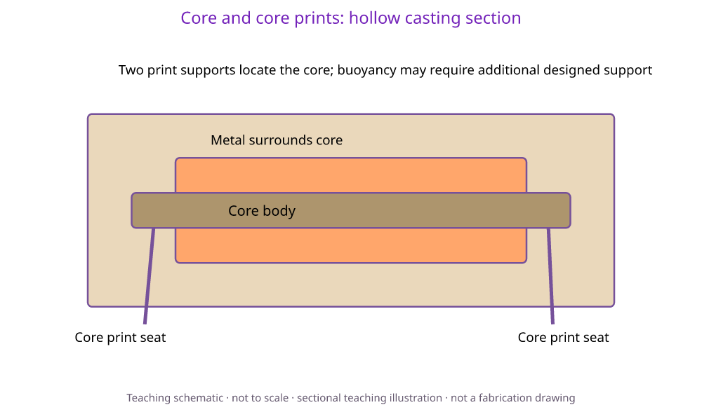
Q1(b)Define pattern and state the types of pattern. Describe any one briefly.4 marks
Model answer · 4 marks
A pattern is a tool used to form the mould cavity corresponding to the casting, with required allowances, parting features and core prints. It is not the finished casting itself.
Types: single-piece, split/two-piece, multi-piece, loose-piece, match-plate, cope-and-drag, gated, sweep, skeleton, segmental and follow-board patterns.
Match-plate pattern: cope and drag halves are mounted on opposite sides of a common plate, often with gates attached. The plate gives repeatable alignment and suits machine/high-volume moulding, but tooling is more complex and costly than a simple single-piece pattern.
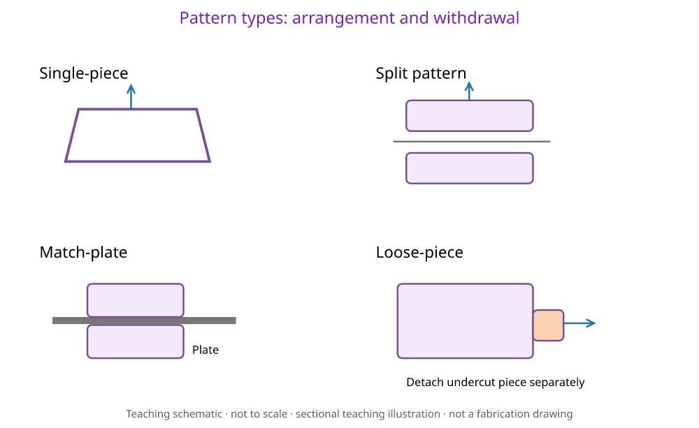
Q1(c)Classify special casting processes and explain the die-casting process with a neat sketch.7 marks
Model answer · 7 marks
Examples/classification of special casting: permanent-mould casting (gravity and pressure die casting, hot- or cold-chamber); centrifugal casting (true, semi-centrifugal and centrifuging); precision/expendable-pattern routes (investment/lost-wax and lost-foam); and other specialised routes such as shell, squeeze, low-pressure and continuous casting. Lists vary by text; these names describe process principles rather than one exclusive universal taxonomy.
Pressure die casting — cold-chamber cycle assumed for the sketch:
- Close and clamp the reusable metal die halves; cavity, cores/slides, vents and runner/gate are aligned.
- For a compatible alloy such as aluminium, ladle a measured charge from a separate melting furnace into the shot sleeve.
- A plunger drives the liquid through the runner and gate into the die cavity at controlled high speed/pressure while displaced air exits through vents or a designed vacuum system.
- Hold pressure while the thin casting solidifies against the cooled die.
- Open the die, eject the casting and attached runner/overflow, trim and inspect; prepare the die for the next guarded cycle.
Die casting offers high production rate, detail and finish, but needs costly dies/clamping equipment and compatible alloys. Hot-chamber machines immerse injection hardware in the bath and are used only with compatible lower-melting alloys.
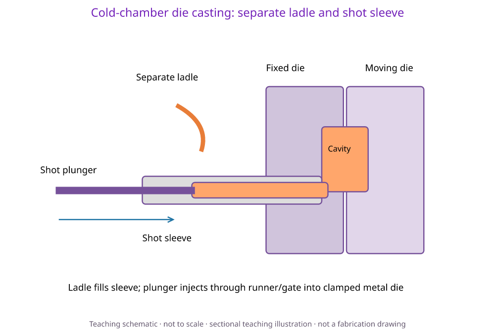
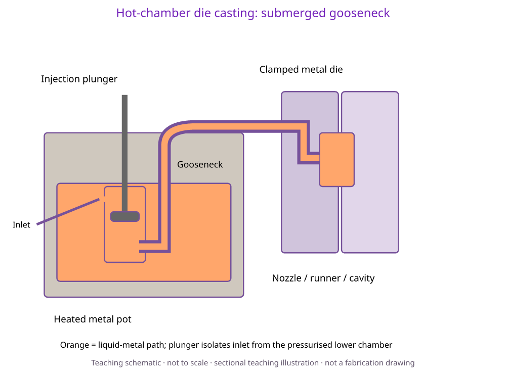
Q1(c) — ORList casting defects with remedies and explain any four briefly.7 marks
Model answer · 7 marks
Defects: gas porosity, blowholes, shrinkage cavity, misrun, cold shut, sand/slag inclusions, mismatch, core shift, hot tear, metal penetration and warpage.
| Defect | Explanation / likely cause | Remedy direction |
|---|---|---|
| Gas porosity / blowholes | Gas trapped or evolved during filling/freezing; moisture, binder gas or poor venting can contribute. | Control sand moisture/binder and permeability, venting, melt treatment and turbulence. |
| Shrinkage cavity | Unfed liquid hot spot contracts during solidification. | Design an effective riser/feeder connection and directional freezing; use chills/section changes only as designed. |
| Misrun | Cavity is not fully filled because metal freezes too early or filling capacity is inadequate. | Review fluidity, section, gating and filling time; use the specified pouring range. |
| Cold shut | Two fronts meet but do not fuse into a sound continuous section. | Improve flow path, metal condition and fill sequence; diagnose rather than merely raising temperature. |
| Sand/slag inclusion | Particles enter from erosion or unclean melt. | Improve mould/core strength, melt cleanliness and filtration/gating. |
| Mismatch / core shift | Mould halves or core move, causing a step or unequal wall. | Check alignment pins, clamping, core prints and support. |
| Hot tear / warpage | Restrained contraction cracks or distorts the casting. | Review alloy/geometry, cooling balance, collapsibility and justified camber. |
Actual repair/acceptance depends on specified service requirements; appearance alone does not establish internal quality.

Question 2
Question wording, marks and expandable study solution
Q2(a)Classify the metal-joining processes.3 marks
Model answer · 3 marks
- Mechanical fastening: detachable bolts/screws or permanent rivets and related mechanical joints.
- Welding: fusion methods (arc, gas, resistance) and solid-state methods (e.g. friction/ultrasonic), selected by material and joint.
- Brazing and soldering: a lower-melting filler wets/join surfaces while base metal remains solid; conventional filler-liquidus boundary is 450°C.
- Adhesive bonding: a suitable polymer adhesive transfers load across prepared surfaces.
Classifications can overlap in industrial standards. Select by material compatibility, thickness, load, access, heat distortion, production and inspection needs.
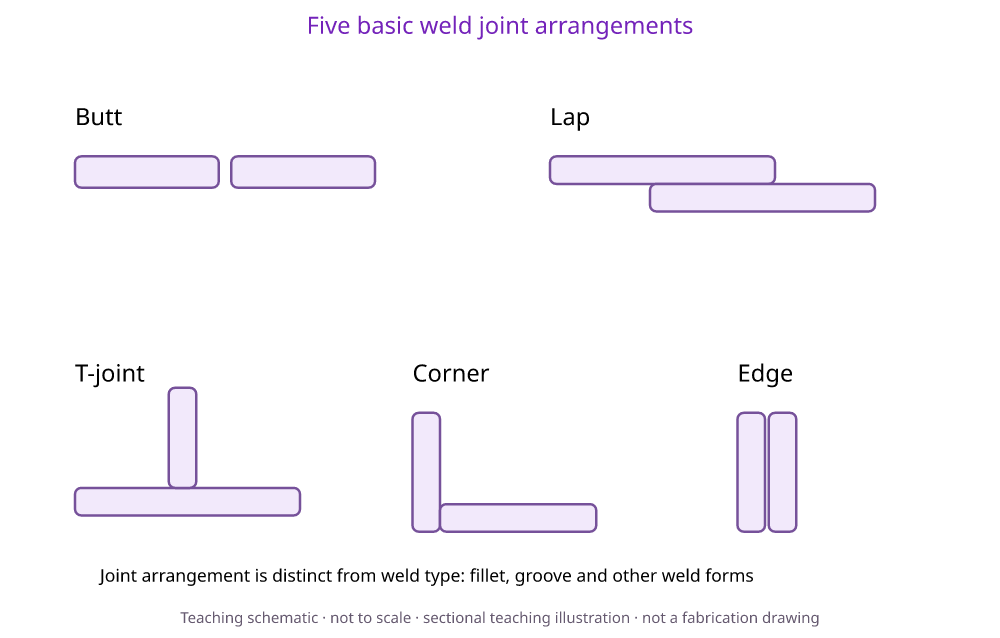
Q2(b)Explain thermit welding in metal-joining process.4 marks
Model answer · 4 marks
Thermit welding is a specialist fusion process in which an approved aluminothermic reaction produces intense heat and molten weld metal. A common simplified reaction is Fe₂O₃ + 2Al → 2Fe + Al₂O₃ + heat.
- Trained staff align and restrain the parts and fit a dry refractory mould around the joint.
- Preheat/prepare only as the qualified proprietary procedure specifies.
- The approved reaction charge is initiated by authorised personnel within a protected exclusion area; no charge ratio or ignition instructions are included.
- Molten metal flows through the designed delivery path into the joint cavity; slag is separated by the mould/crucible arrangement.
- After specified solidification/cooling, remove the mould, trim/finish and inspect the joint.
It is useful for field rail and selected heavy-section joints, but requires strict controls for extreme heat, molten metal and reaction products.

Q2(c)State the working of resistance welding and explain spot welding with a neat sketch.7 marks
Model answer · 7 marks
Resistance-welding principle: low-voltage, high current passes through contacting workpieces while electrodes apply force. Electrical resistance at the interface generates heat approximately Q = I²Rt; the required time, current and force produce a local weld without a separate filler electrode.
Spot-welding equipment: transformer/power source and timer/controller, opposed copper-alloy electrodes, force actuator, water-cooled holders, overlap fixture and safety guarding.
- Clean and overlap the sheets; align the opposed electrodes at the required spot.
- Apply squeeze force before current so contact is established.
- Pass a controlled high-current pulse; interface heat forms a molten nugget between the sheets.
- Stop current but maintain force during hold so the nugget solidifies under restraint.
- Release electrodes and index the work for the next spot; inspect indentation and specified weld tests.
Used for sheet assemblies such as vehicle bodies. It needs access from both sides, and a good-looking surface alone does not prove nugget size or joint strength.
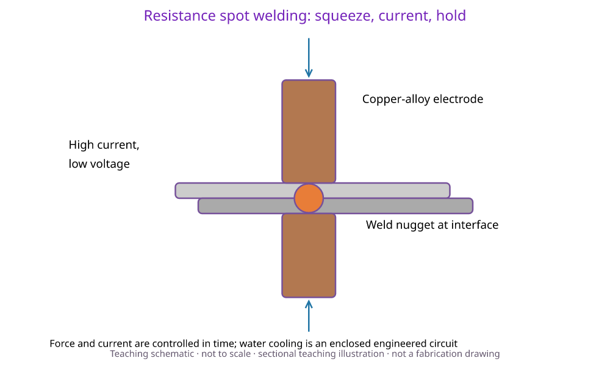
Q2(a) — ORState different safety precautions in metal-joining processes.3 marks
Model answer · 3 marks
- Use a correctly shaded welding helmet, safety glasses, flame-resistant clothing, gloves and safety footwear; screen nearby people from arc UV/IR.
- Provide local fume extraction/ventilation and use suitable respiratory protection when the risk assessment requires it.
- Inspect rated, insulated leads/holders; connect the work return correctly, keep equipment dry and isolate before adjustment/maintenance.
- Secure gas cylinders upright; use gas-specific regulators/hoses and required flashback/non-return protection. Keep oxygen equipment free of oil/grease.
- Remove combustibles, follow hot-work permit/fire-watch rules and never weld sealed or unknown containers.
- Use guards/interlocks and trained operators; assess confined spaces and lifting risks separately.
Q2(b) — ORWrite a short note on the various gas flames used in gas welding.4 marks
Model answer · 4 marks
Neutral: nearly balanced oxygen/acetylene; distinct inner cone plus outer envelope, without an acetylene feather. It is the general-purpose choice for many alloys.
Carburising/reducing: excess acetylene produces an inner cone, visible acetylene feather and outer envelope; it may add carbon and is used only when compatible.
Oxidising: excess oxygen gives a short, sharp inner cone with outer envelope; it can oxidise the work and is suited only to specified materials/processes.
The cone/feather/envelope shapes and relative lengths are shown schematically. Use the approved qualified procedure to select and set a flame.
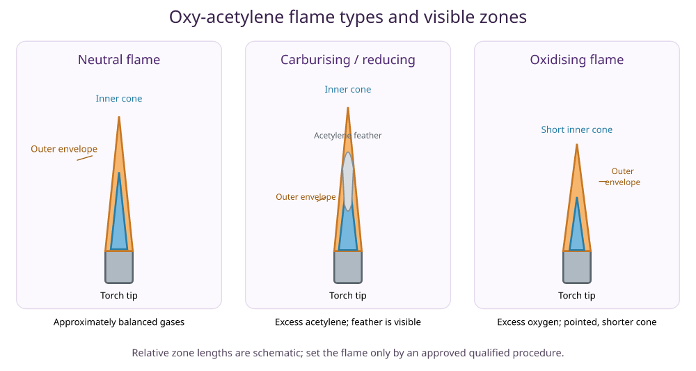
Q2(c) — ORList various types of arc-welding processes and explain any one with a neat sketch.7 marks
Model answer · 7 marks
Types: shielded metal arc (SMAW), MIG/MAG or gas-metal arc (GMAW), TIG/GTAW, submerged arc (SAW), flux-cored arc (FCAW), plasma arc and carbon-arc welding.
SMAW working: a power source sends current through an insulated holder and flux-coated consumable electrode to the work return. An arc between electrode tip and work melts the joint edges and electrode core. Droplets transfer into the pool; coating produces shielding gas and slag. The welder advances the electrode along the prepared joint while maintaining prescribed arc length/travel. The pool solidifies behind the arc, slag is removed safely between passes, and the weld is inspected after cooling.
Equipment includes AC/DC source, leads/holder, electrode, work clamp, joint fixtures, screen, fume extraction and PPE. It is portable and versatile, but electrode changes, slag removal, skill and fume control limit productivity.
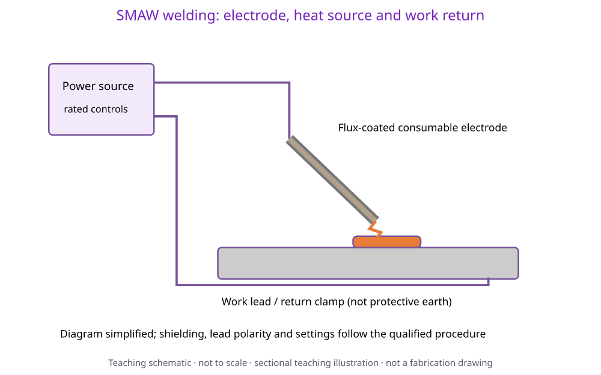
Question 3
Question wording, marks and expandable study solution
Q3(a)Define metal-forming process and give a detailed classification.3 marks
Model answer · 3 marks
Metal forming shapes solid metal by controlled plastic deformation under forces, without removing chips or filling a molten-metal mould.
- Bulk deformation: rolling, forging/upsetting, extrusion and wire/bar/tube drawing.
- Sheet-metal forming: bending, stretch forming and deep drawing (cutting/blanking operations are related sheet processes but are not themselves plastic forming).
- By temperature: hot, warm or cold working, relative to the material's recrystallisation behaviour.
- By loading/tool route: compressive processes, tensile drawing, bending and combined forming; processes can also be classified by open/closed tooling or continuous/discrete production.
Q3(b)Define forging. Describe any one forging process with a neat sketch.4 marks
Model answer · 4 marks
Forging is shaping metal by compressive force from a hammer or press, usually between dies. It may be hot, warm or cold according to material/process.
Open-die upsetting example:
- Place a suitable billet between relatively simple upper and lower dies.
- Apply controlled compressive blows/load, reducing height and increasing cross-section; reposition/rotate as required to obtain the desired section.
- Use measured stock, temperature and die support; finish with required machining allowance.
- Inspect size, surface folds/cracks and specified integrity.
Open-die forging suits large/simple or low-volume parts and flexible shapes, but depends on operator skill and has lower dimensional precision than closed-die production.
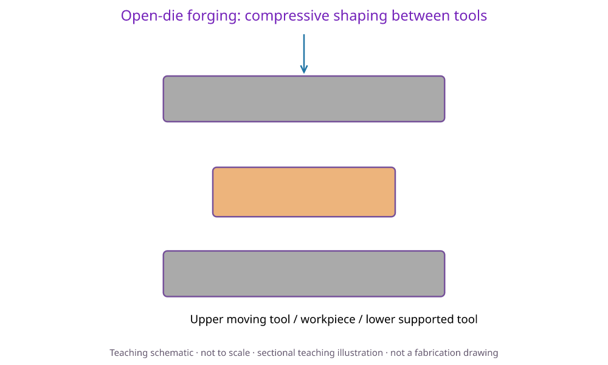
Q3(c)State different methods of extrusion process. Explain any one with a neat sketch.7 marks
Model answer · 7 marks
Methods: direct/forward extrusion, indirect/backward extrusion, hydrostatic extrusion and impact extrusion. Processes can also be hot or cold; hollow products use mandrels/bridge dies as designed.
Direct (forward) extrusion: a ram pushes a billet through a stationary die; metal exits in the same direction as ram motion.
- Place a prepared billet in the container and align the die at its outlet.
- A dummy block transmits the press force; the container confines the billet laterally.
- The ram advances and compresses the billet; when stress exceeds flow resistance, metal passes through the die opening.
- Continue the controlled stroke to produce a continuous section; stop before the specified butt/discard region.
- Cut, cool/straighten as required and inspect dimensions and surface.
It makes bars, rods, channels and constant-section profiles. Tool loads, container friction, butt loss and die wear are limitations. Indirect extrusion reduces billet/container sliding; hydrostatic uses pressurised fluid; impact uses a rapid stroke on a slug.
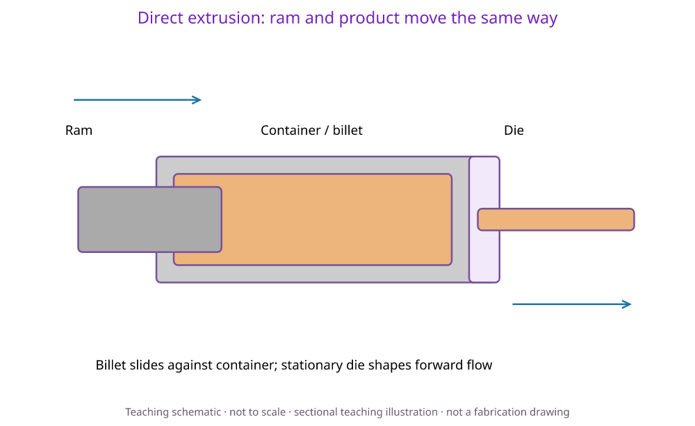
Q3(a) — ORDefine recrystallisation temperature and explain it.3 marks
Model answer · 3 marks
Recrystallisation temperature is the temperature range at which new, relatively strain-free grains form and replace the deformed, work-hardened grains during a specified time.
During heating after cold work, recovery first relieves some stored strain; recrystallisation nucleates/grows new grains and restores ductility; further heating/time can cause grain growth. The temperature is not a single universal material constant: it depends on alloy, prior cold reduction, purity, heating time and initial grain condition. Hot working is defined relative to this behaviour.
Q3(b) — ORDifferentiate hot-working and cold-working processes.4 marks
Model answer · 4 marks
| Hot working | Cold working |
|---|---|
| Above the material's recrystallisation range; grains can recrystallise during working. | Below the recrystallisation range; strain hardening remains unless followed by annealing. |
| Lower flow stress and large reductions/shape changes are practical. | Higher forming loads; strength/hardness increase but ductility decreases. |
| Oxidation/scale and coarser finish/tolerance may result. | Better surface finish and dimensional accuracy are generally possible. |
| Useful for large stock, slabs and sections. | Useful for accurate sheet, strip, wire and small sections. |
The dividing temperature depends on material, deformation and time; “cold” is not simply one fixed Celsius limit.
Q3(c) — ORState methods of drawing operation and explain any one with a neat sketch.7 marks
Model answer · 7 marks
Drawing methods: wire drawing; bar/rod drawing; tube drawing by sinking (no internal tool), plug drawing or mandrel drawing; and sheet-metal deep drawing (cup drawing). Wire/bar/tube drawing pulls stock through a reducing die; deep drawing uses a punch and die to form a sheet blank into a cup.
Wire drawing:
- Clean and lubricate a ductile rod/wire and select a planned reduction/pass schedule.
- Point the leading end and pass it through a converging die; secure it in a drawbench or capstan.
- Pull under tension so the die reduces area and length increases; the bearing controls final size.
- Repeat passes/anneal only as specified; measure diameter and inspect surface, straightness and cracks.
A die, holder, pulling drive, lubricant, stock preparation and guarding are required. It produces accurate wire with good finish, but excessive reduction, friction or low ductility can cause cracking.

Question 4
Question wording, marks and expandable study solution
Q4(a)List various plastic-moulding processes with applications.3 marks
Model answer · 3 marks
- Injection moulding: caps, housings and complex repeat parts.
- Compression moulding: thermoset electrical parts, handles and reinforced SMC/BMC parts.
- Extrusion moulding: continuous pipe, film, sheet, rod and profiles.
- Blow moulding: hollow bottles, containers and tanks; PET bottles commonly use stretch-blow.
- Rotational moulding: large hollow tanks, bins and seamless low-pressure products.
Process choice depends on resin/grade, shape, quantity, tolerances, wall distribution, tooling and service requirements.
Q4(b)Explain the plastic-extrusion moulding process with a figure.4 marks
Model answer · 4 marks
Plastic extrusion continuously plasticises polymer in a heated barrel and forces the melt through a shaped die.
- Prepared resin feeds from a hopper into the rotating screw/barrel.
- Screw conveying, shear and controlled heat soften/meter the polymer into a uniform melt.
- The screw pushes melt through the die; the opening sets the continuous profile (pipe, sheet, film, rod or section).
- Downstream sizing/calibration and cooling fix dimensions; haul-off controls line speed, then the product is cut or wound.
It is efficient for long constant-cross-section products. Die swell, cooling distortion, pressure and material-conditioning limits must be controlled.
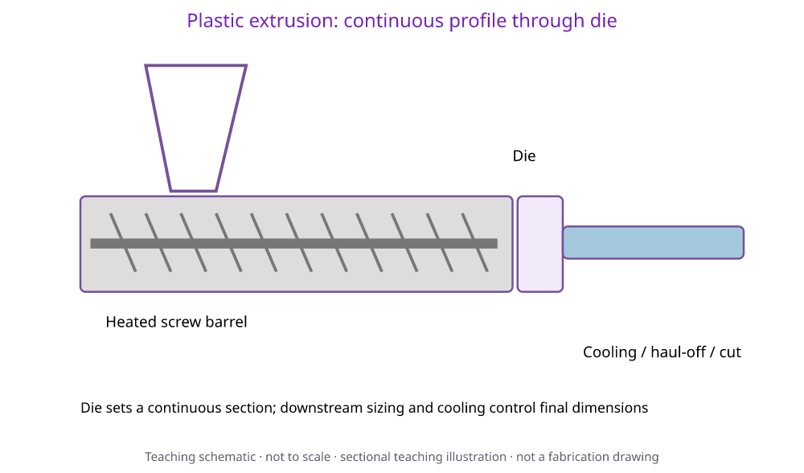
Q4(c)State types of furnaces used in metal casting. Draw and label a cupola furnace.7 marks
Model answer · 7 marks
Furnaces used for casting melts: cupola (predominantly cast iron); crucible (fuel-fired or electrically heated, often non-ferrous); pit furnace (below-floor arrangement); electric resistance; coreless/channel induction; electric arc; and reverberatory/rotary furnaces for suitable alloys. These names do not form one exclusive classification: “crucible” describes the metal-holding vessel, “pit” its installation and “electric” the heat source.
Cupola labels and function: vertical steel shell and refractory lining; stack/exhaust; charging door for alternate metal/coke/flux charge; coke bed; wind belt and tuyeres admitting air at combustion level; slag hole above the metal tap; well/hearth collecting molten iron; and bottom/drop doors. Its zones are the preheating/stack, melting, reducing, combustion and well regions. Rising gases preheat descending charge; coke combustion supplies heat; metal melts and collects in the hearth while slag floats above it.
Cupolas are predominantly used for cast iron. Furnace selection depends on alloy, melt temperature, contamination, batch/continuous output, energy and safe handling.
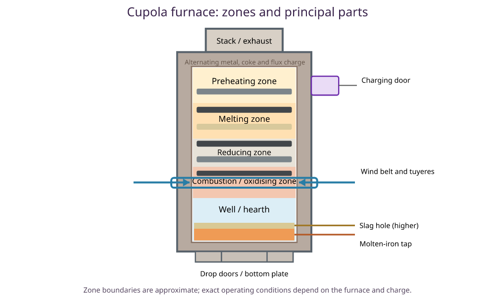
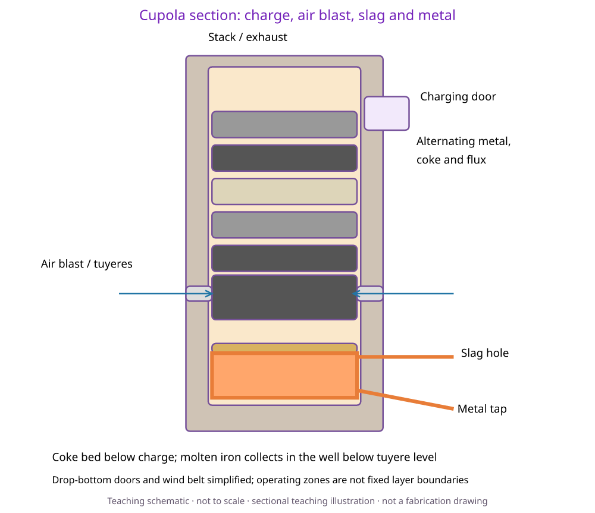
Q4(a) — ORState factors affecting selection of plastic-moulding processes.3 marks
Model answer · 3 marks
- Resin family/grade, melt flow, cure behaviour, heat sensitivity and drying needs.
- Part shape, size, wall thickness, hollow/solid form, undercuts and complexity.
- Production quantity, cycle time, required output and repeatability.
- Tolerances, surface finish, wall distribution and material properties in service.
- Tooling/machine cost, available equipment, scrap/regrind rules, energy and labour.
- Safety, ventilation, environmental and regulatory requirements.
Choose from the product and grade, not resin code alone.
Q4(b) — ORExplain blow-moulding process with a neat sketch.4 marks
Model answer · 4 marks
Extrusion-blow moulding (representative route):
- An extruder produces a hot hollow parison and places it between open halves of a split mould.
- The mould closes and pinches the parison; a blow pin/air route seals and supplies controlled air.
- Air pressure expands the soft tube against the cooled cavity, forming the container's outer shape.
- After the wall cools sufficiently, vent air, open the mould, eject and trim flash; inspect wall distribution and leakage.
It suits bottles, containers and hollow tanks. Parison control, neck/flash design and wall-thickness uniformity are important. PET bottles generally use injection stretch-blow rather than this basic extrusion-parison route.
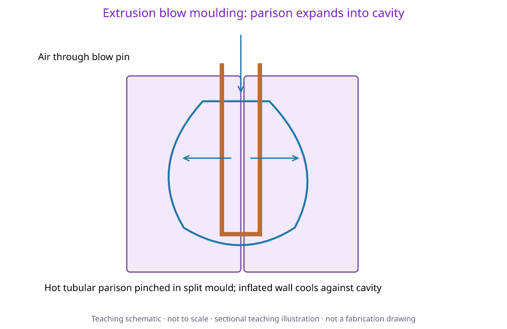
Q4(c) — ORDraw the gating system and state its types with the function of each component.7 marks
Model answer · 7 marks
A gating system delivers liquid metal into a mould cavity while controlling flow, erosion, aspiration, gas and inclusions.
- Pouring basin/cup: receives the stream and steadies entry.
- Tapered sprue: conducts metal downward; taper helps keep the accelerating stream full and limit aspiration.
- Sprue well: reduces impact/turbulence at the direction change.
- Runner: distributes metal from the sprue toward ingates.
- Runner extension/filter: can trap some slag/inclusions in a properly designed system.
- Ingate: controls the entry location and directs metal into the cavity.
- Vent: allows displaced gas to escape; it is not the main metal-flow passage.
Types: top gating (short path but may splash/erode); bottom gating (quieter upward fill but longer path/heat loss); parting-line gating (convenient for split moulds). Gating ratios classify sprue:total runner:total ingate area; pressurised/unpressurised layouts are designed for alloy and casting, not universal ratios. A riser feeds solidification shrinkage and is distinct from the gating passages.

Question 5
Question wording, marks and expandable study solution
Q5(a)List applications of PVC, HDPE and ABS based on their characteristics.3 marks
Model answer · 3 marks
| Material | Characteristics | Applications |
|---|---|---|
| PVC | Rigid or plasticised flexible grades; chemical resistance and useful electrical insulation. | Pipe/profile, cable insulation, fittings and selected flexible hose/flooring grades. |
| HDPE | Tough, chemical-resistant, low moisture uptake and relatively stiff. | Water/drainage pipes, blow-moulded containers, drums and crates. |
| ABS | Impact toughness, mouldability and dimensional utility in suitable grades. | Appliance/electronic housings, automotive trim, helmets and consumer-product shells. |
Grade, additives and service requirements matter. Resin name alone does not certify food, electrical or safety suitability.
Q5(b)List various types of rolling mills and explain a four-high rolling mill with neat sketch.4 marks
Model answer · 4 marks
Types: two-high (reversing/non-reversing), three-high, four-high, cluster/multi-high, tandem/continuous, universal and planetary mills.
Four-high mill: two small work rolls act on the strip; two large backup rolls support them and reduce roll bending. Strip enters the roll bite, thickness is reduced by the set gap and length increases. The rolls are carried in bearings/chocks in a rigid stand and driven in opposite directions. Backup support permits thin sheet/strip rolling with good thickness control, though alignment, roll crown and force still affect flatness.
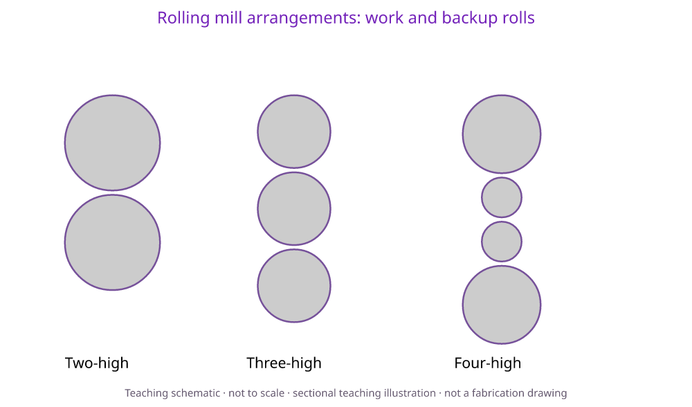
Q5(c)List equipment used for gas welding and explain their working.7 marks
Model answer · 7 marks
Equipment: oxygen and fuel-gas cylinders/manifold; gas-specific regulators and gauges; separate compatible hoses; required non-return/flashback protection; welding torch with mixer, valves and tip/nozzle; filler rod and flux where required; fixtures; PPE, screens and fume extraction.
Working principle: controlled oxygen and acetylene meet in the torch and burn at the tip. The flame heats the prepared joint edges to a molten condition; compatible filler is added when required, and the pool solidifies into the joint. The torch/tip, gas mixture, travel and filler must suit the base alloy and qualified procedure.
- Trained personnel inspect approved, rated equipment and the work area.
- Secure cylinders and confirm gas-specific lines, regulators, protective devices, joint preparation and ventilation.
- Use the authorised procedure to establish the specified flame and bring edges to the required molten state.
- Add filler/flux as specified while moving along the joint to obtain fusion.
- Shut down, cool, make safe and inspect only by the site procedure.
Oxy-acetylene is portable and useful for thin sections/repair, but has a broad heat-affected zone and slower heating than many arc methods. No cylinder-lighting sequence or pressure setting is prescribed here.

Q5(a) — ORList various plastic materials with their properties.3 marks
Model answer · 3 marks
- PET/PETE: clear, stiff and useful gas-barrier grades; bottles and packaging.
- HDPE: tough, chemical-resistant and low moisture uptake; pipes and containers.
- PVC: rigid or flexible with useful chemical/electrical properties; pipe and cable grades.
- LDPE: flexible and moisture-resistant; films and bags.
- PP: low density, chemical resistance and good fatigue in suitable living hinges; caps/containers.
- ABS: impact toughness and mouldability; housings/trim.
- PS: rigid clear general-purpose grades or impact-modified/foam grades; packaging and housings.
- Nylon/PC: engineering resins used for wear/strength or impact/clarity in grade-specific parts.
Thermoplastics soften on heating; thermosets crosslink/cure and do not simply remelt. Resin grade and additives alter properties.
Q5(b) — ORCorrelate hand forging with machine forging.4 marks
Model answer · 4 marks
| Hand/smith forging | Machine forging |
|---|---|
| Operator uses hand hammer, anvil and simple tools; stock is repositioned manually. | Power hammer or press supplies repeated/controlled energy; dies or tooling guide deformation. |
| Flexible and low tooling cost; useful for repair, prototypes and small batches. | Higher production rate, repeatability and consistency for batch/mass production. |
| More dependent on individual skill; dimensional precision and output are lower. | Greater capital/tooling/maintenance and setup cost; requires guarding and rated material handling. |
| Best for simple/small quantities and variable work. | Best when volume and part geometry justify matched dies, automation or high-force equipment. |
Both shape solid metal mainly by compressive deformation. “Machine forging” includes different hammer/press and die arrangements.
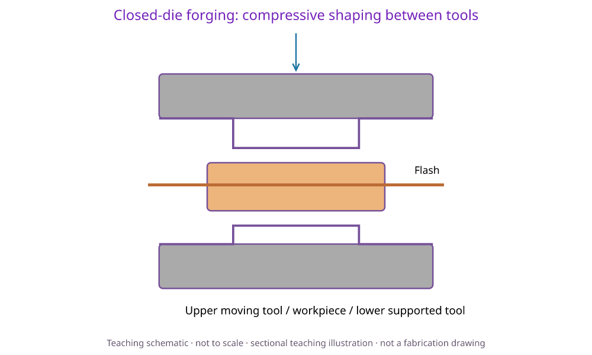
Q5(c) — ORCompare welding, brazing and soldering in metal joining process.7 marks
Model answer · 7 marks
| Feature | Welding | Brazing | Soldering |
|---|---|---|---|
| Joining action | Fusion welding melts base edges; solid-state welding is an important exception. | Filler melts/wets the joint; base metal stays solid. | Filler melts/wets the joint; base metal stays solid. |
| Filler temperature | Weld pool is at base-metal fusion conditions; filler may be used or not. | Filler liquidus conventionally above 450°C, below base-metal solidus. | Filler liquidus conventionally below 450°C. |
| Joint design / load | Butt/groove/fillet designs; high load possible with suitable metallurgy and procedure. | Often uses overlap/capillary clearance; good for suitable dissimilar metals and moderate/high service duties. | Often lap/electrical joints; generally lower mechanical and service-temperature duty. |
| Heat/equipment | Arc, gas, resistance or other process; distortion/HAZ and safety controls matter. | Local or furnace heat; filler/flux/atmosphere and fit-up control wetting. | Lower heat input in many applications; flux cleanliness and electrical fume control matter. |
| Examples | Structures, frames, rail/pipe, fabrication. | Carbide tips, heat exchangers, selected dissimilar joints. | Electronics and light sheet/electrical connections. |
Strength depends on material, joint geometry and service; do not rank methods from name alone.